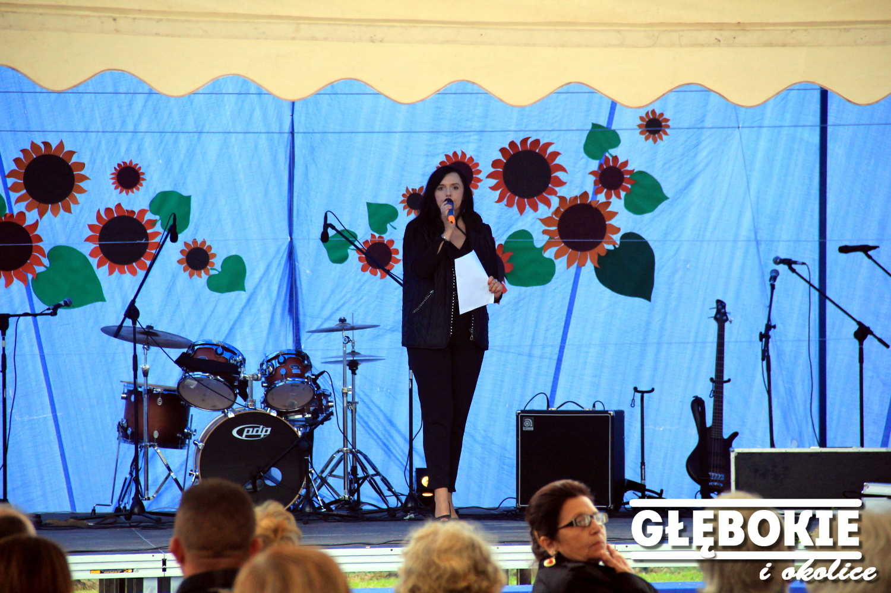

<html> 
<head>
	<title>Dozynki Gminno-Parafialne Cyców 2017 (zdjęcia) </title>
	<meta http-equiv="Content-Type" content="text/html; charset=UTF-8">
	<link rel="stylesheet" href="style.css" type="text/css" /> 
	<meta name="description" content="Dożynki gminno-parafialne w Cycowie 2017! (zdjęcia)" />
	<script src="http://www.glebokieiokolice.cba.pl/bb_fbslider.js"></script>
</html>

<body>

	<div id="container" />
	<div id="logo" />    </div>
	<div id="nav" /> 
		<div id="main" /> <a href="index.html" /> Strona Główna </a> </div>
		<div id="glebokie" /> <a href="glebokie.html" /> Głębokie </a> </div>
		<div id="gmina" /> <a href="gmina.html" /> Gmina </a> </div>
		<div id="powiat" /> <a href="Powiat.html" /> Powiat </a> </div>
	</div>

	<div id="content" />
	<div /> <div class="half" />  </div> <div class="rhalf" /> <div class="link" /> <a href="dozynki-2017.html" /> Dozynki Gminno-Parafialne Cyców 2017 (zdjęcia) </a> </div> </br> Dnia 03.09.2017 odbyły się dożynki gminno-parafialne w Cycowie. Niestety tego dnia organizatorów zaskoczyła ulewa co pewnie zniechęciło wielu z was do przybycia. Dla osób które jednak dotarły mimo złej pogody postawiono namiot zarówno nad widownią jak i sceną dla artystów. Byli wokaliści, muzycy, grupy taneczne oraz kabareciarze. Nie obyło się również bez problemów ze sprzętem jednak te były w miarę szybko naprawiane.   </div> </div>
	<div style="clear:both; margin-top:20px;" /> </div>
	</div></div></div>
			<div id="gallery" /> <div style="border-bottom-style:solid; margin-top:7px; border-bottom-color:yellow; color:yellow; margin-left:5px; font:15px/22px 'font';" /> Galeria </div>
<div class="row">
  <div class="column">
    
  </div><div class="column">
  </div><div class="column">
  </div><div class="column">
  </div><div class="column">
  </div><div class="column">
  </div><div class="column">
  </div><div class="column">
  </div><div class="column">
  </div><div class="column">
  </div><div class="column">
  </div><div class="column">
  </div><div class="column">


  </div>

</div>
	<div class="container">
  <span onclick="this.parentElement.style.display='none'" class="closebtn">&times;</span>
  
  <div id="imgtext"></div>
</div> </div>
	<div>
		<script>
function myFunction(imgs) {
    var expandImg = document.getElementById("expandedImg");
    var imgText = document.getElementById("imgtext");
    expandImg.src = imgs.src;
    imgText.innerHTML = imgs.alt;
    expandImg.parentElement.style.display = "block";
}
</script>
</body>


</html>